Blender headless com Luna: com e sem skills
Galeria de evidências. Os arquivos originais foram preservados; as imagens não receberam retoques. Uma execução por condição, avaliação não cega e sem telemetria de tokens.
Blaster arcano: prop de jogo com e sem skills
O blaster sem skills (B) foi minha preferência para o pedido, principalmente pela identidade arcana mais explícita, cristal visível e acabamento nos dois lados. A entrega com skills (A) é muito mais econômica e tem uma linguagem angular low poly consistente. A execução de QA em A não cobriu o objeto solicitado.
Triângulos GLB: A 868 · B 5,216. Skills consultadas: A 8 · B 0.
Mostrar vistas de frente, trás e quadros adicionais
Vigia do Brejo: criatura com rig e idle
Neste par, a versão com skills (A) foi minha preferência: tem silhueta mais coerente, membros alongados e placas ósseas legíveis com 1.428 triângulos exportados. B também entregou rig e animação funcionais, mas ficou mais volumosa e segmentada, com 5.556 triângulos. Nenhuma transmite plenamente uma criatura curvada e organicamente aterrorizante.
Triângulos GLB: A 1,428 · B 5,556. Skills consultadas: A 10 · B 0.
A — com skillsB — sem skills Mostrar vistas de frente, trás e quadros adicionais
pose-01.png
A — com skillsB — sem skills pose-24.png
pose-48.png
Capela abandonada: cenário estático e composição
Prefiro A, com skills, para este pedido de diorama noturno: caminho central claro, árvores secas e telhado deteriorado reforçam a composição de abandono, com menos geometria. B tem uma fachada mais monumental, arco decorado e poço detalhado, mas sua apresentação aproxima e corta elementos periféricos. A levou mais tempo e passou por várias correções de QA.
Triângulos GLB: A 4,108 · B 7,404. Skills consultadas: A 9 · B 0.
Mostrar vistas de frente, trás e quadros adicionais
Moinho: cenário animado, exportação e interseções
Minha preferência equilibrada foi ligeiramente por A, com skills: proporções compactas, pás com detalhes e base mais trabalhada, além de 16% menos triângulos. B também entregou todo o movimento pedido com uma silhueta mais alta e simples. Ambas passaram na checagem independente de movimento e interseções amostradas. A exigiu bem mais rodadas de revisão.
Triângulos GLB: A 1,680 · B 2,002. Skills consultadas: A 8 · B 0.
Mostrar vistas de frente, trás e quadros adicionais
motion-01.png
A — com skillsB — sem skills motion-16.png
motion-32.png
Kit modular: peças, encaixes e circulação
Prefiro A como base para continuar: arco, paginação de pedra, origens e separação da montagem ficaram mais coerentes. Isso veio com GLB muito maior e 19.516 triângulos efetivamente exportados, contra 9.212 em B. Ambas têm falhas: A mantém juntas coplanares e uma tocha num trecho examinado; B exporta protótipos sobrepostos à montagem e uma parede atravessa a transição da curva.
Triângulos GLB: A 19,516 · B 9,212. Skills consultadas: A 10 · B 0.
Mostrar vistas de frente, trás e quadros adicionais
Inspeção neutra dos módulos — 1/3
Esquerda: A, com skills. Direita: B, sem skills. Imagens geradas pelo avaliador a partir dos GLBs finais, preservando materiais e geometria. Câmera relativa ao tamanho de cada peça e iluminação comum; dimensões em unidades Blender, não na mesma convenção física de Roblox. Estes renders não foram produzidos pelos agentes.
Piso — dimensões A 4.00 × 4.00 × 0.36 / B 4.00 × 4.00 × 0.24
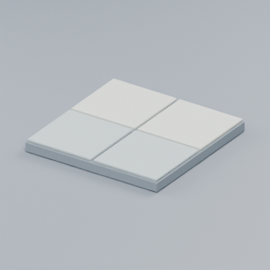
A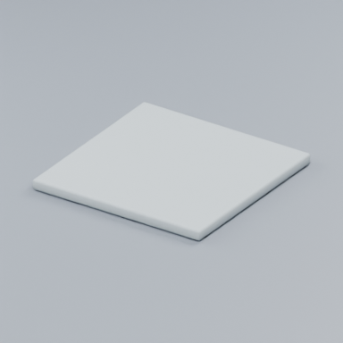
BParede — dimensões A 4.00 × 0.46 × 4.02 / B 4.08 × 0.55 × 4.00
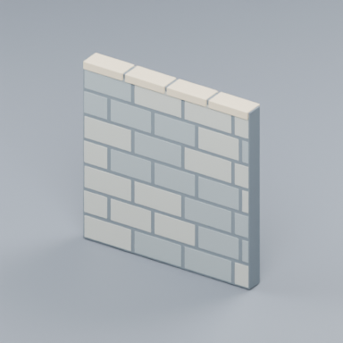
A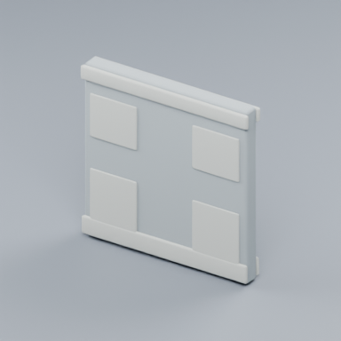
BInspeção neutra dos módulos — 2/3
Esquerda: A, com skills. Direita: B, sem skills. Imagens geradas pelo avaliador a partir dos GLBs finais, preservando materiais e geometria. Câmera relativa ao tamanho de cada peça e iluminação comum; dimensões em unidades Blender, não na mesma convenção física de Roblox. Estes renders não foram produzidos pelos agentes.
Canto — dimensões A 4.23 × 4.23 × 4.02 / B 4.20 × 4.20 × 4.00
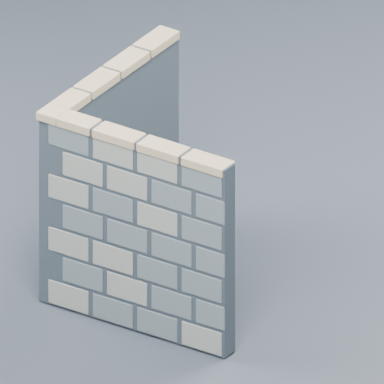
A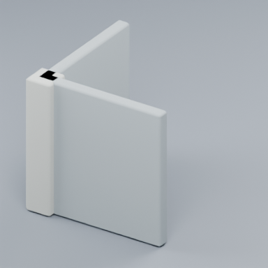
BArco — dimensões A 4.10 × 0.50 × 4.00 / B 4.00 × 0.73 × 4.06
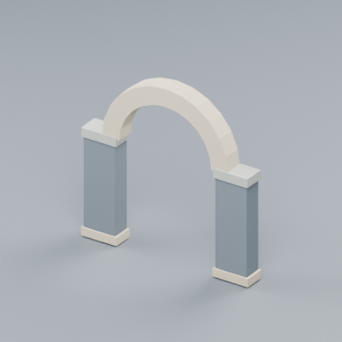
A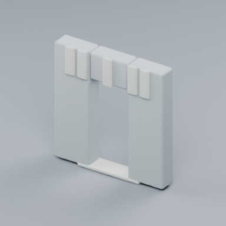
BInspeção neutra dos módulos — 3/3
Esquerda: A, com skills. Direita: B, sem skills. Imagens geradas pelo avaliador a partir dos GLBs finais, preservando materiais e geometria. Câmera relativa ao tamanho de cada peça e iluminação comum; dimensões em unidades Blender, não na mesma convenção física de Roblox. Estes renders não foram produzidos pelos agentes.
Coluna — dimensões A 0.84 × 0.84 × 4.00 / B 1.08 × 1.00 × 4.00
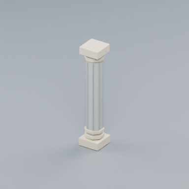
A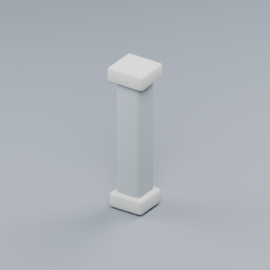
BTocha — dimensões A 0.56 × 0.38 × 1.78 / B 0.38 × 0.59 × 1.27
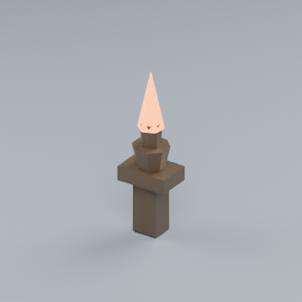
A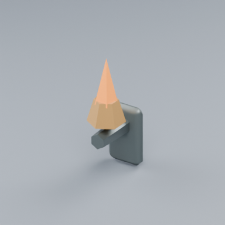
B